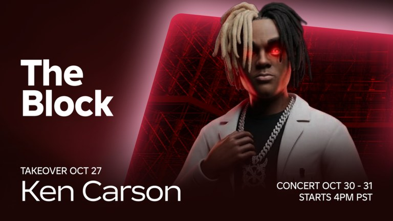

✅ Ken Carson vine în The Hollow: concert LIVE în The Block, de sâmbătă 31 oct, 00:50

Ken Carson intră în The Hollow! E confirmat pe pagina oficială de eveniment Roblox, publicată de contul verificat „Live on Roblox” în jocul The Block.
✅ Ce scrie pe pagina oficială (evenimentul „Ken Carson”, Takeover Event):
- Ken Carson „preia” Roblox în The Block, The Mimic, Blade Ball și Fisch.
- Face parte din seria de artiști The Hollow.
- Primești un item UGC exclusiv și bilete (tickets) în The Hollow.
- Concertul din The Block: de sâmbătă, 31 oct, la 00:50, până duminică, 1 nov, la ~08:55 (ora României). Pentru americani e vineri, 30 oct, 4pm PT.
- Pe imaginea oficială mai scrie „TAKEOVER OCT 27” (data din SUA, fără oră anunțată).
✅ The Mimic x Ken Carson e și el oficial: CTStudio are evenimentul „THE MIMIC X KEN CARSON”, de azi, luni 26 oct, de la 19:00, până duminică, 1 nov, la ~08:55 (ora României). Trebuie să supraviețuiești lui XGATA și să scapi, iar cine termină evenimentul primește o lanternă exclusivă, limitată.
🎤 Tot oficial, tot în seria de artiști The Hollow: Malcriada are un concert LIVE de Día de Muertos în The Block, de luni, 2 nov, la 02:50, până marți, 3 nov, la ~04:00 (ora României). Și aici primești un item UGC exclusiv și bilete în The Hollow.
⚠️ ZVON (doar din conturi de fani, neconfirmat):
- Că ar exista quest-uri speciale Ken Carson în Blade Ball și Fisch. Pagina oficială zice doar că Ken Carson „preia” și jocurile astea, fără detalii despre quest-uri, iar Blade Ball și Fisch nu au încă un eveniment Ken Carson pe paginile lor.
- Că de azi, 26 oct, ai lua un item gratis prin quest-uri. Oficial, azi pornește doar evenimentul din The Mimic (cu lanterna). UGC-ul exclusiv apare pe pagina concertului din 31 oct.
- Numele „GATA-0” pentru monstrul din The Mimic și detaliile cu laboratorul și stick-ul USB ascuns vin de la @kenrelated și @Lidesty. Pagina oficială zice doar „XGATA”.
Pe scurt: ce e la „oficial” vine de pe paginile oficiale de evenimente Roblox (Live on Roblox și CTStudio). Restul vine din conturi de fani.
Vezi și: ghidul complet The Hollow, cu 9 monștri în 9 nopți: https://pyromanc3r777.github.io/vexu-hq/posts/the-hollow-eventul-de-halloween-al-roblox-vine-pe-22-octombrie.html
Vezi și: The Mimic, Nightmare Circus s-a întors (tot de azi): https://pyromanc3r777.github.io/vexu-hq/posts/the-mimic-nightmare-circus-returns-26-octombrie.html
Te duci la concertul lui Ken Carson sau doar după UGC? 🎤
Follow pe TikTok @vexu_online și abonare pe YouTube la VEXU Online. Follow = Au ce bile! 💥
✅ CONFIRMAT
⚠️ ZVON
- Quest-uri Ken Carson în Blade Ball și Fisch: pagina oficială zice doar că Ken Carson „preia” aceste jocuri, fără detalii; nu există încă eveniment pe paginile lor.
- Item gratis prin quest-uri din 26 oct: oficial, azi pornește doar evenimentul The Mimic x Ken Carson (lanternă).
- Numele „GATA-0”, laboratorul și stick-ul USB ascuns (după @kenrelated și @Lidesty); oficial apare doar „XGATA”.